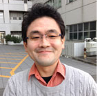
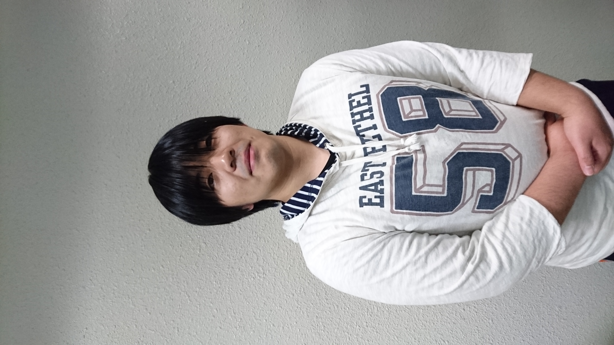
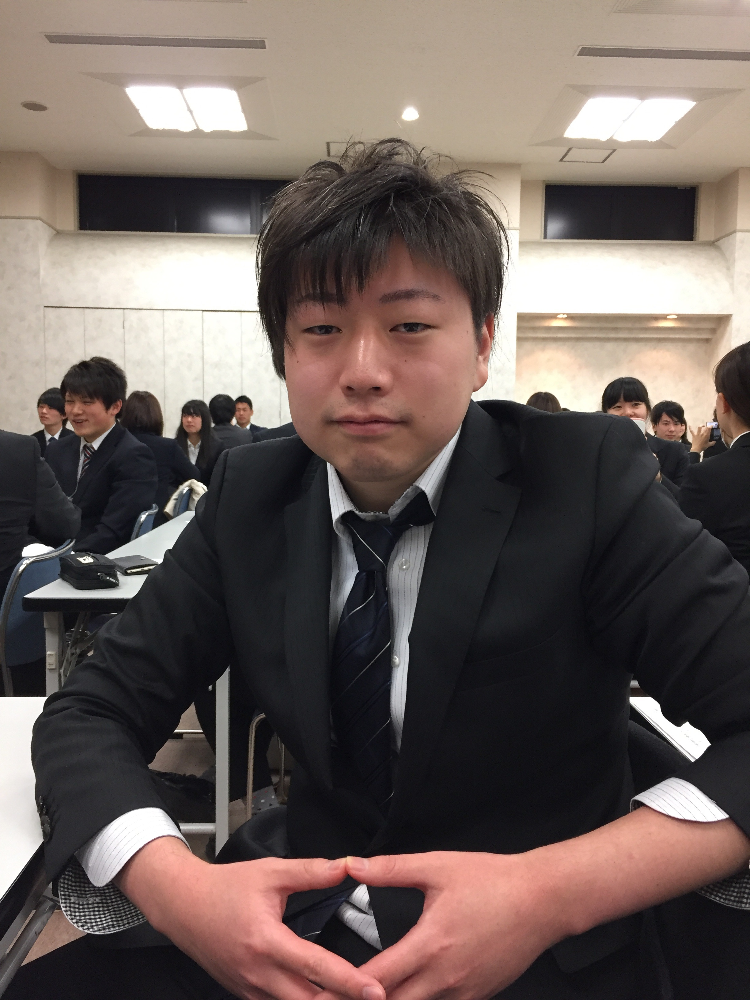
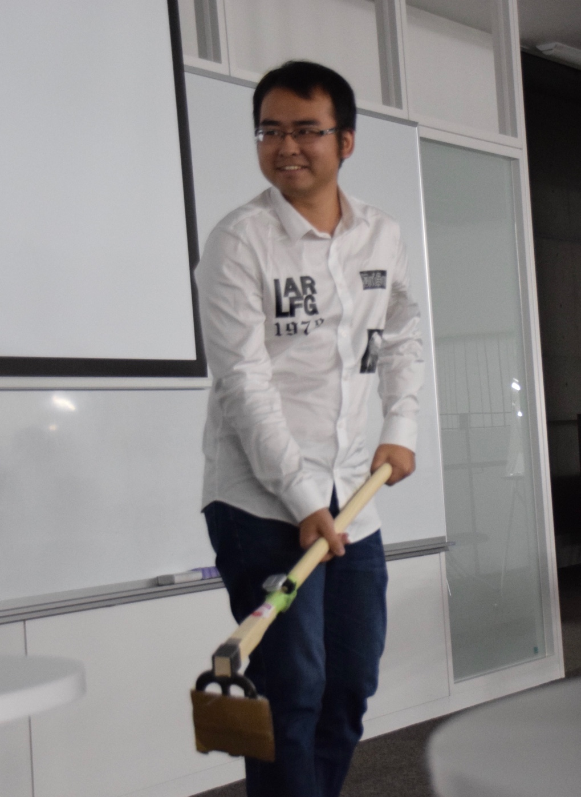

教員
白松 俊 (准教授)

1976年千葉県生まれ．2003年，東京理科大学 大学院理工学研究科情報科学専攻 修士課程修了．2003年より，JST CREST研究補助員として産業技術総合研究所にて勤務．2005年，京都大学 大学院情報学研究科 博士後期課程に進学．2008年3月，博士（情報学）を取得．2008年4月から，日本学術振興会 特別研究員（PD）．2009年4月から，名古屋工業大学 大学院工学研究科情報工学専攻 助教．2015年4月から，現職．Linked Open Data (LOD) と自然言語処理技術を用いた住民参画支援の研究に従事．
大学院生
水野 創太 (M2)
テーマ:スマートフォンのセンサーを用いた身体動作入力による即興合奏支援システム
趣味:ゲーム(RPG,シューティング,ノベルゲーム),ピアノ
ひとこと:ラスアスのパーティメンバ募集中
趣味:ゲーム(RPG,シューティング,ノベルゲーム),ピアノ
ひとこと:ラスアスのパーティメンバ募集中
宮脇 克典 (M2)

テーマ:未定
趣味:
ひとこと:
趣味:
ひとこと:
渡辺 賢 (M2)
テーマ: MissionForest: 組織内外における協働支援のためのタスク構造化システムの開発
趣味:ボードゲーム全般(将棋≤囲碁，麻雀，ドミニオン，カタンetc…)、freeciv(フリーのCivilizationクローン)
ひとこと:linuxで遊びたいならfreeciv！！
趣味:ボードゲーム全般(将棋≤囲碁，麻雀，ドミニオン，カタンetc…)、freeciv(フリーのCivilizationクローン)
ひとこと:linuxで遊びたいならfreeciv！！
荒川 智哉 (M2)

テーマ:徘徊高齢者捜索支援
趣味:ソシャゲ
ひとこと:アプリ開発してます
趣味:ソシャゲ
ひとこと:アプリ開発してます
内藤勝太 (M1)
テーマ:
趣味:服,パチスロ
ひとこと:一生懸命頑張ります!
趣味:服,パチスロ
ひとこと:一生懸命頑張ります!
蔡 超 (M1)

テーマ:Filtering out improper accounts from Twitter user accounts for discovering individuals interested in certain topic
趣味：バスケ、ゲーム
ひとこと：坚持就是胜利。
趣味：バスケ、ゲーム
ひとこと：坚持就是胜利。